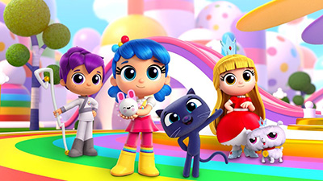

True, protagonist of the Netflix-original animated series True and the Rainbow Kingdom, is a strong heroine who possesses a warm heart and boundless energy. She accepts every challenge head on with a beaming smile. True is the only one with the ability to activate the magical powers of The Wishes of the wishing tree, solve problems in the Rainbow Kingdom and empower others with her imagination, mindfulness and empathy.
"Zip zap zoom, I choose you! Wake up, tropers! Wish come true!" - True
The Rainbow Kingdom, a wondrous, colorful universe, is filled with delightful and fantastical citizens, many of whom are very dear friends to True and often join in her adventures.